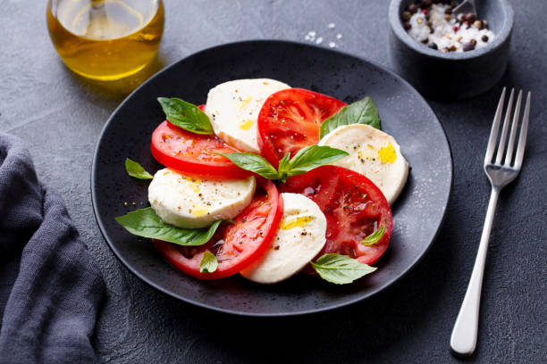

Caprese Salad

Caprese salad is a refreshing and vibrant Italian dish that showcases the flavors of ripe tomatoes, fresh mozzarella cheese, and fragrant basil leaves. It's a simple yet elegant salad that highlights the beauty of seasonal ingredients.
Ingredients:
- 3 ripe tomatoes
- 8 ounces (225 grams) fresh mozzarella cheese
- A handful of fresh basil leaves
- 2 tablespoons extra virgin olive oil
- 1 tablespoon balsamic vinegar
- Salt and pepper to taste
Directions:
- Slice the tomatoes and fresh mozzarella cheese into 1/4-inch thick slices. Arrange them on a platter, alternating between tomato and mozzarella slices.
- Tuck fresh basil leaves between the tomato and mozzarella slices. Drizzle the salad with extra virgin olive oil and balsamic vinegar.
- Season with salt and pepper to taste. Allow the flavors to meld together for a few minutes before serving. Enjoy this simple and delightful salad!